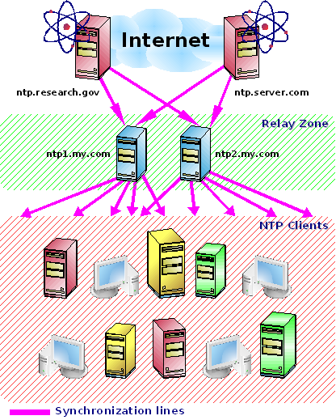

- Tüm sisteminizde kesin zamana sahip olmak katı ağ güvenliği stratejisine (basit bir güvenlik duvarı kutusundan daha fazlasıyla elde edilir) sahip olmak kadar önemlidir. Bu, iyi bir sistem yönetiminin birincil bileşenlerinden biridir ve organizasyonun ve güvenliğin başında gelir. Özellikle dağıtık uygulamaların yönetiminde, sanalyöre servislerinde ve hatta dağıtık güvenlik aracında kesin zaman gereklidir.
- Burada protokolü incelemeyeceğiz, fakat bu harika buluşun Internete nasıl bir yaygınlık kazandırdığı bizim işimize yarayacak. Daha fazlasını http://www.ntp.org/ adresinde bulabilirsiniz.Bir kez sisteminiz uygun bir şekilde kurulduğunda, NTP, çalışan uygulamaları etkilememek için ufak ayarlamalar yaparak zamanın doğru olmasını sağlar.Kesin zaman atomların elektron frekanslarını temel alan donanım saatinden elde edilebilir. Ayrıca GPS (Küresel Konumlandırma Sistemi) tabanlı yöntemler de mevcuttur. Birincisi daha kesindir fakat ikincisi de oldukça iyidir. Atomik saatler çok özel ve pahalı ekipmanlar gerektirir, fakat geliştiricileri (genellikle üniversiteler ve araştırma labarotuvarları) onları NTP çalıştıran bilgisayarlara bağlarlar ve sonuçta onları ücretsiz olarak kullanmamıza izin verirler. Sistemimizi bu şekilde eşzamanlarız.
- Şunlara ihtiyacınız olacak:
- İnternet'e doğrudan veya dolaylı (güvenlik duvarı üzerinden) bağlantı.
- NTP sunucuları seçin. Kamuya açık pool.ntp.org sunucusunu kullanabilirsiniz veya NTP sanalyöresindeki katman 2 kamuya açık zaman sunucularından birini seçebilirsiniz. Eğer İnternet erişiminiz yoksa, WAN yöneticiniz (zeki biri olmalı) size bazı dahili adresler sağlayabilir.
- Eşzamanlamak istediğiniz tüm sistemler için NTP paketiniz olsun. Gözde Linux dağıtımınızın CDsinde RPM olarak bulabilirsiniz veya rpmfind.net'de arama yapın.
Güzel bir mimari örneği:Şekil 9.1. NTP sunucu için Yerel Nakil Sunucu
Eğer eşzamanlanacak bir çok makinanız varsa hepsini seçtiğiniz uzak NTP sunucuya yönlendirmeyin. Sunucularınızdan sadece ikisi uzak NTP sunucuya erişmeli ve diğerleri bu ikisiyle eşitlenmeli. Bunlara Nakil Sunucuları diyeceğiz.Nakil sunucunuz ağda ulaşılabilen herhangi bir makina olabilir. NTP düşük bellek ve işlemci harcar. Bunun için bu işe adanmış bir makinaya gerek yoktur.
İpucu Yerel Nakil Sunucunuz için ntp1.my.com ve ntp2.my.com gibi bir mahlas oluşturmak iyi bir fikirdir. İstemci makinaları yapılandırırken yalnızca bu isimleri kullanın. Bu yolla NTP işlevselliğini farklı bir Nakil Sunucuya (farklı IP ve konak ismiyle) istemcileri yeniden yapılandırmadan taşıyabilirsiniz. Bu tür mahlaslar oluşturmak için DNS yöneticisine başvurun.
- Nakil Sunucunuz için
- /etc/ntp.conf dosyasını düzenleyin ve seçtiğiniz uzak sunucuları ekleyin:
- Örnek 9.5. Nakil sunucunun /etc/ntp.conf dosyası
.. server otherntp.server.org # server.org'daki bir katman 1 sunucu server ntp.research.gov # research.gov'daki bir katman 2 sunucu ..
Yine pool.ntp.org kamu sunucusunu kullanabilirsiniz veya NTP sanalyöresinde katman 2 kamuya açık zaman sunucularının listesini alabilirsiniz. - İstemcileriniz için
- /etc/ntp.conf dosyasını düzenleyin ve Nakil Sunucularınızı standart ismiyle ekleyin:
Makinanızın NTP sunucularıyla karşılaştırıldığında birkaç dakikadan daha büyük farklılık gösteren UTC'ye sahipse NTP çalışmayacaktır. Bu yüzden önce tam eşleme yapmalısınız ve bunu yoğun olmayan zamanda yapmanızı tavsiye ederim. Bu sadece ilk NTP kurulumu sırasında gereklidir. Bir daha yapmanıza gerek yoktur:- Örnek 9.7. İlk eşzamanlama
-
 İlk tam eşzamanlama. 15 saniye gerideyiz.
İlk tam eşzamanlama. 15 saniye gerideyiz. İkinci tam eşzamanlama sadece emin olmak için. Şimdi tam olarak 0 saniye fark var.
İkinci tam eşzamanlama sadece emin olmak için. Şimdi tam olarak 0 saniye fark var.
Son adım her iki makinada da NTP'yi yeniden başlatmak:bash# service ntpd restart
- Şimdi herşey kurulmuş durumda. NTP yumuşak bir biçimde makinanızı eşzamanlı tutacak. Bu işlemi NTP Sorgusu (ntpq komutu) kullanarak izleyebilirsiniz:
- Örnek 9.8. Örnek bir eşzamanlama durumu
-
bash# ntpq -p remote refid st t when poll reach delay offset jitter ============================================================================== -jj.cs.umb.edu gandalf.sigmaso 3 u 95 1024 377 31.681 -18.549 1.572 milo.mcs.anl.go ntp0.mcs.anl.go 2 u 818 1024 125 41.993 -15.264 1.392 -mailer1.psc.edu ntp1.usno.navy. 2 u 972 1024 377 38.206 19.589 28.028 -dr-zaius.cs.wis ben.cs.wisc.edu 2 u 502 1024 357 55.098 3.979 0.333 +taylor.cs.wisc. ben.cs.wisc.edu 2 u 454 1024 347 54.127 3.379 0.047 -ntp0.cis.strath harris.cc.strat 3 u 507 1024 377 115.274 -5.025 1.642 *clock.via.net .GPS. 1 u 426 1024 377 107.424 -3.018 2.534 ntp1.conectiv.c 0.0.0.0 16 u - 1024 0 0.000 0.000 4000..00 +bonehed.lcs.mit .GPS. 1 u 984 1024 377 25.126 0.131 30.939 -world.std.com 204.34.198.40 2 u 119 1024 377 24.229 -6.884 0.421
Sütunların Anlamları:- remote
- Uzak NTP Sunucunun ismi. -n seçeneğini kullanırsanız sunucunun konak-ismi yerine IP adresini göreceksiniz.
- refid
- Her sunucunun kendi zamanını nereden aldığını gösterir. Bu konak-ismi veya Küresel Konumlama Sistemi kaynağı .GPS. benzeri birşey olabilir.
- st
- Katman uzak sunucunun önceliğini gösteren 1'den 16'ya kadar bir rakamdır. 1 en kesin, 16 'sunucu ulaşılamaz' anlamındadır. Sizin katmanınız kesin uzak sunucunuzun bir fazlası olmalıdır. Asla katman 1 sunuculara bağlanmayın, katman 2'leri kullanın! Katman 2 sunucuların amacımıza uygun olmasının yanında, bu tutum Katman 1 sunucular üzerindeki trafiği düşürdüğü için de iyidir.
- poll
- Zaman istekleri arasındaki oylama zamanı (saniyelerle). Değer, izin verilen en az ve en çok oylama değerleri aralığındadır. İlk olarak değer eşzamanlamanın daha hızlı olmasını sağlamak için küçüktür. Saatler eşzamanlı olduktan sonra oylama değeri ağ trafiğini ve zaman sunucudaki yükü azaltmak için artar.
- reach
- Bu, 8 bit bir dizinin sekizlik gösterimidir. Bu sayı yerel makinanın sunucuya son 8 denemesini gösterir. Uzak sunucu erişildiyse bit 1 olur.
- delay
- "saat kaç" isteğine cevap verilmesi için gereken zaman miktarıdır (saniyeler).
- offset
- En önemli değer. Yerel ve uzak sunucu arasındaki zaman farkı. Eşzamanlama durumunda bu fark azalır ve bu da makinanın zamanının daha doğru olduğu anlamına gelir.
- jitter
- Dağılım -veya salınım da denir- birçok ardışık istek/cevap çiftleri farkının sapmasının istatistiksel bir ölçüsüdür. Küçük dağılım değerleri büyük dağılım değerlerine tercih edilir. Küçük dağılım değerleri daha doğru bir eşzamanlama yapılmasına izin verir.
Konak-isminden önceki işaretleri anlamları:- -
- Yerel NTP servisinin bu sunucuyla pek uyuşmadığını gösterir.
- +
- Yerel NTP servisinin bu sunucuyla uyuştuğunu gösterir.
- x
- Kötü bir konağa işaret eder.
- *
- Geçerli gözdeyi gösterir.
- Her zaman, bilgisayar yeniden başlatıldığında bile çalışan bir NTP kullanmak isteyebilirsiniz. Her makinada şunu yapın:
bash# chkconfig --level 2345 ntpd on
Bu otomatik başlatmayı sağlar.Eğer makinanınız uzun süre (aylar, yıllar) yeniden başlatılmadan çalışıyorsa, doğru olmayan donanım saati ve sistem saati (artık oldukça doğru) arasında büyük tutarsızlıklar göreceksiniz. Modern Linux dağıtımları sistemin her kapanışında sistem saatini donanım saatine setclock komutuna benzer bir mekanizmayla kopyalar. Bu yolla bir sonraki İşletim Sistemi açılışında neredeyse kapattığınız zamanki kadar doğru bir zaman elde edersiniz.